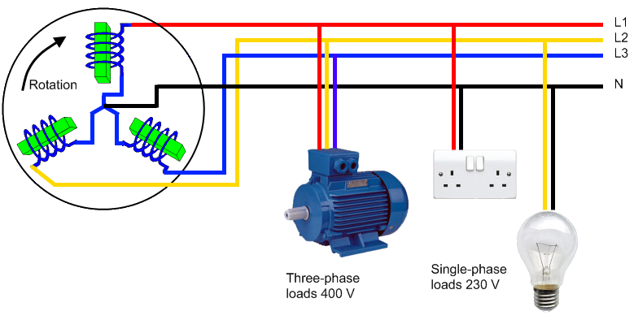
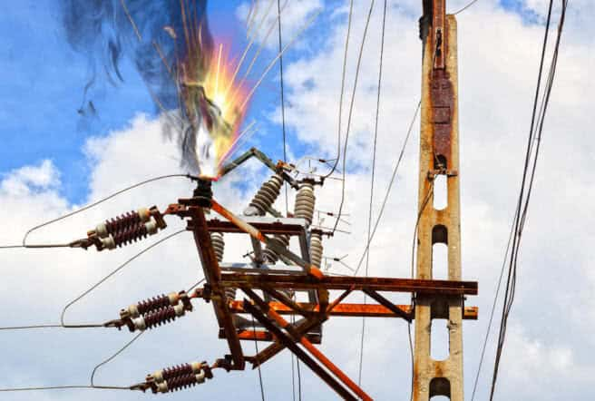

Introduction
PowerAI represents a cutting-edge solution for automated fault detection and classification in three-phase electrical power systems. By leveraging advanced artificial intelligence and deep learning techniques, this project addresses the critical challenges of maintaining power grid reliability and safety in modern electrical infrastructure.
—
Three-Phase Electrical Systems Overview
{kind=link}
Three-phase electrical systems form the backbone of modern energy distribution infrastructure. These systems consist of three phase conductors (R, S, T) offset by 120° and a neutral conductor, enabling efficient electrical energy transmission.
Key Advantages of Three-Phase Systems:
Constant Power Transmission: Provides steady, continuous power delivery
Load Balancing: Ensures optimal distribution of electrical loads
Reduced Line Losses: Minimizes energy waste during transmission
Equipment Optimization: Enables efficient operation of transformers and motors
System Input Data
Three-phase systems generate six fundamental electrical signals that contain comprehensive information about system status:
3 Phase Currents: IR, IS, IT (Amperes)
3 Phase Voltages: VR, VS, VT (Volts)
Information Richness: These six signals contain all necessary information to precisely characterize system state and identify anomalies with high accuracy.
—
The Critical Need for Fault Detection and Classification
{kind=link}
Common Fault Types in Power Systems:
Short Circuits: Phase-to-ground, phase-to-phase, and three-phase faults
Insulation Failures: Breakdown of protective insulation materials
Overloads and Imbalances: Excessive current or unbalanced loading conditions
Electrical Arc Faults: Dangerous arcing between conductors
Consequences of Undetected Faults:
Safety Risks:
Fire hazards and potential explosions
Electrocution dangers
Equipment damage and failure
Economic Impact:
Production shutdowns and downtime
Costly equipment replacement
Revenue losses due to service interruptions
Service Quality:
Power supply disruptions
Voltage fluctuations and instabilities
Regulatory Compliance:
Non-compliance with safety standards and regulations
Potential legal liabilities
Time-Critical Detection Requirements
Temporal Challenge: Fault detection must be instantaneous (within milliseconds) to prevent fault propagation and limit damage to the electrical infrastructure.
—
Why AI Approach vs. Traditional Methods
Traditional Methods |
PowerAI (AI-Powered Approach) |
|---|---|
Separate processing of current and voltage signals |
Simultaneous analysis of all six signals (IR, IS, IT, VR, VS, VT) |
RMS value-based analysis, losing transient information |
Full waveform and temporal sequence analysis |
Manual threshold calibration for each installation |
Adaptive thresholding through continuous self-learning |
Simple statistical techniques with limited insights |
Advanced multi-dimensional feature extraction |
Poor handling of complex, non-linear relationships |
Deep learning models capture non-linear interdependencies |
Limited to binary fault/no-fault classification |
Detailed fault type identification and predictive capabilities |
High false positive rates during system transients |
Intelligent distinction between faults and transient events |
Static analysis, not adaptable to dynamic conditions |
Dynamic adaptation to changing system states |
Minimal pattern recognition capabilities |
Advanced pattern recognition using neural networks |
—
Project Objectives
Primary Goals
Develop Advanced AI Models: Create sophisticated neural network architectures capable of real-time fault detection and classification
Achieve High Accuracy: Minimize false positives while maintaining maximum sensitivity to actual faults
Enable Real-Time Processing: Ensure millisecond-level response times for critical fault scenarios
Provide Comprehensive Analysis: Deliver detailed fault classification and system health insights
Expected Outcomes
Improved Power System Reliability: Reduce unplanned outages and equipment failures
Enhanced Safety: Minimize risks of electrical accidents and equipment damage
Cost Reduction: Lower maintenance costs through predictive fault detection
Operational Efficiency: Streamline power system monitoring and management
—
Next Steps: Data Acquisition and Modeling
The foundation of any successful AI system lies in high-quality, representative training data. In the following section, we will explore how we obtained comprehensive fault data through advanced simulation techniques using an existing MATLAB Simulink model sourced from the open-source community.
→ Continue to: Data Acquisition from Simulink Models
Our next presentation will detail:
Sourcing and adapting an existing Simulink model for three-phase power systems
Understanding the model architecture and fault simulation capabilities
Data extraction and preprocessing methods
Dataset preparation for machine learning training